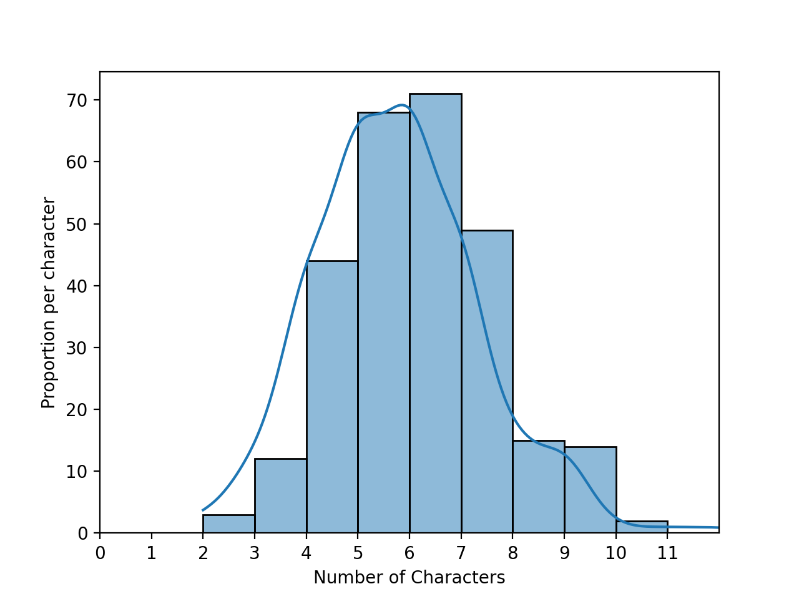

Unless otherwise noted, classwork is submitted via Gradescope. Access information is given during the corresponding lecture.
Classwork 0: Due midnight, Monday, 31 January.
Available on Gradescope, this classwork focuses on the course
syllabus.
If you do have access to the course on Gradescope, write to datasci@hunter.cuny.edu. Include in your email that you not receive a Gradescope invitation, your preferred email, and we will manually generate an invitation.
Classwork 1: Due 4pm, Monday, 31 January.
Available during Lecture 1 on Gradescope (paper version also available for those without a phone or laptop at lecture), this classwork complements the exploratory data analysis of names and foreshadows the sampling of data in Lecture 2.
Classwork 2: Due 4pm, Thursday, 3 February.
Available during Lecture 2 on Gradescope, this classwork introduces the autograder that is used for the programming assignments.
A paper version will also available for those without use of an IDE during lecture, but, if at all possible, you should work through this using an IDE since the on-line classwork mirrors the structure and content of the upcoming Program 1.
(Note: Hunter College is committed to all students having the technology needed for their courses. If you are in need of technology, see
Student Life's Support & Resources Page.)
Quizzes
Unless otherwise noted, quizzes focus on the corresponding programming assignment. The quizzes are 30 minutes long and cannot be repeated. They are available for the 24 hours after lecture and assess your programming skill using HackerRank. Access information for each quiz will be available under the Quizzes menu on Blackboard.
Quiz 1: Due 4pm, Friday, 11 February.
Link to access HackerRank available at the end of Lecture 4 (and posted on Blackboard).
This first coding challenge focuses on reading and processing data from a file using core Python 3.6+ as in Program 1.
.py file and do not accept iPython notebooks.
Also, to receive full credit, the code should be compatible with Python 3.6 (the default for the Gradescope autograders).
All students registered by Monday, 26 January are sent a registration invitation to the email on record on their Blackboard account. If you did not receive the email or would like to use a different account, write to datasci@hunter.cuny.edu. Include in your email that you not receive a Gradescope invitation, your preferred email, and we will manually generate an invitation. As a default, we use your name as it appears in Blackboard/CUNYFirst (to update CUNYFirst, see changing your personal information). If you prefer a different name for Gradescope, include it in your post, and we will update the Gradescope registration.
To encourage starting early on programs, bonus points are given for early submission. A point a day, up to a total of 3 bonus points (10% of the program grade), are possible. The points are prorated by hour. For example, if you turn in the program 36 hours early, then the bonus poins are: (36 hours/3 days)*3 points = (36 hours/72 hours)*3 points = 1.5 points.
To get full credit for a program, the file must include in the opening comment:
"""
Name: Thomas Hunter
Email: thomas.hunter.1870@hunter.cuny.edu
Resources: Used python.org as a reminder of Python 3 print statements.
"""
Program 1: Popular Names. Due noon, Thursday, 10 February.
In lecture and Chapter 1 of the textbook, we looked at first names for students taking data science at UC Berkeley as well as the baby names data set from the Social Security Administration. We explored properties such as the lengths of names:

For this program, we will focus on the most common names in a given file, as well the names that make up a fixed fraction of the names. To allow for unit testing, the assignment is broken into the following functions: For example, assuming these functions are in a file, Another example with a file korea_most_pop2019.txt, containing the most popular names in South Korea in 2019, separated by both newlines and spaces:
Notes: you should submit a file with only the standard comments at the top, and these functions. The grading scripts will then import the file for testing and expect the functions to match in name and return values to above:
Learning Objective: to build competency with string and file I/O functionality of core Python.
Available Libraries: Core Python 3.6+ only.
extract_names(file_name, sep = ["\n"]): Returns a list of names. Assumes that the names are separated by the separators listed in sep. The default value is ["\n"] but the possible inputs are 1 or more separators. Your function should remove any empty strings from the list.
count_names(names_lst):
Returns a dictionary of names with values the number of times each name occurs in the input, names_lst.
popular_names(names_dict,num = 3):
Returns a list of the num most popular names as a list of strings. If no value is passed for num, the default value of 3 is used (that is, it returns the 3 most popular names).
percent_captured(names_dict,threshold = 75):
Returns the number of names needed to have at least threshold percent of all the names in the dictionary. If no value is passed for percent, the default value of 75 is used (that is, it returns the number of names needed to have 75 percent (or more) of the total occurrances of names).
p1.py and run on a file containing names that start with 'A', a_names.txt:
gives the output:
lst = p1.extract_names('a_names.txt')
print(f'The list is:\n{lst}')
dict = p1.count_names(lst)
print(f'The dictionary is:\n{dict}')
lstTop = p1.popular_names(dict)
print(f'The top 3 names are: {lstTop}.')
num = p1.percent_captured(dict, threshold = 50)
print(f'The top {num} names make up 50% of the list.')
The list is:
['Alex', 'Andy', 'Amy', 'Alani', 'Alex', 'Ana', 'Angela', 'Ai', 'Asia', 'Alex', 'Anna', 'Ana', 'Asami', 'Andrea', 'Alex', 'Ana', 'Anya', 'Aiko', 'Ana', 'Angela', 'Ai', 'Alexander', 'Alex', 'Ana', 'Andy']
The dictionary is:
{'Alex': 5, 'Andy': 2, 'Amy': 1, 'Alani': 1, 'Ana': 5, 'Angela': 2, 'Ai': 2, 'Asia': 1, 'Anna': 1, 'Asami': 1, 'Andrea': 1, 'Anya': 1, 'Aiko': 1, 'Alexander': 1}
The top 3 names are: ['Alex', 'Ana', 'Andy'].
The top 4 names make up 50% of the list.
gives the output:
lst = p1.extract_names('korea_most_pop2019.txt',sep=["\n"," "])
print(lst)
['Ji-an', 'Ha-yoon', 'Seo-ah', 'Ha-eun', 'Seo-yun', 'Ha-rin', 'Ji-yoo', 'Ji-woo', 'Soo-ah', 'Ji-a', 'Seo-jun', 'Ha-joon', 'Do-yun', 'Eun-woo', 'Si-woo', 'Ji-ho', 'Ye-jun', 'Yu-jun', 'Ju-won', 'Min-jun']
If your file includes code outside of these functions, either comment the code out before submitting or use a main function that is conditionally executed (see Think CS: Section 6.8 for details).
"""
Name: YOUR NAME
Email: YOUR EMAIL
Resources: RESOURCES USED
"""
def extract_names(file_name, sep = ["\n"]):
"""
Opens and reads from file_name, and returns a list of names.
Keyword arguments:
sep -- the deliminators for splitting up the data (default ['\n'])
"""
#Placeholder-- replace with your code
lst = []
return lst
def count_names(names_lst):
"""
Returns a dictionary of names with values the number of times
each name occurs in the input, names_lst.
"""
#Placeholder-- replace with your code
dict = {}
return dict
def popular_names(names_dict,num = 3):
"""
Returns a list of the num most popular names as a list of strings.
Keyword arguments:
sep -- the number of names to return (default is 3)
"""
#Placeholder-- replace with your code
lst = []
return lst
def percent_captured(names_dict,threshold = 75):
"""
Returns the number of names needed to have at least threshold percent of
all the names in the dictionary.
Keyword arguments:
threshold -- the percent used for threshold (default 75)
"""
#Placeholder-- replace with your code
count = 0
return count
More to come...